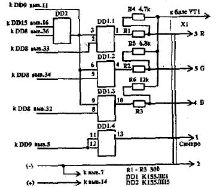

Цвет в РК - подобных компьютерах
КОНТРОЛЕР "САМОЦВЕТ", М. АКИМЕНКО,
265300, г.Костополь, Ровенскаяобл., ул.Сндорова, 3 - 42.
Л. Толкалин, Редакция TheDark Design
Предлагаю, с моей точки зрения, более удобный вариант введения цвета в ПК "Радио-вбРК", чем предложенный Л. Толкалиным в "РЛ" N4/92. При введении в ПК этой доработки, выполненной в виде приставки, пользователь приобретет возможность включения следующих режимов:
Все режимы могут быть использованы как по отдельности, так и в любых сочетаниях.

Контроллер использует при работе коды-команды, заносимые непосредственно в экранную область ОЗУ (76DO - 7FFF). Во время хода развертки приставка получает код-команду, включает нужный режим, а сам код отображает в виде пробела. Действие кода-команды начинается с момента, когда луч при развертке достигает указанного знакоместа и выполняется до тех пор, пока луч не дойдет до конца экрана или не поступит следующая код-команда.
|
Формат |
80Н - черный |
|
81Н - красный | |
|
82Н - черный мерц | |
|
8ЗН - красный мерц | |
|
84Н - зеленый | |
|
85Н - желтый |
|
86Н - зеленый мерц | |
|
87Н - желтый мерц | |
|
88Н - синий | |
|
89Н - розовый | |
|
8АН - синий мерц | |
|
8ВН - розовый мерц | |
|
8СН - голубой | |
|
8DН - белый | |
|
8EН - голубой мерц | |
|
8FН - белый мерц |
При работе на языке Бейсик Вы можете заносить в экранную область ОЗУ нужный код оператором РОКE M,N (где М - адрес в ОЗУ, N - нужный код).
При подключении контроллера следует руководствоваться принципиальной схемой ПК "Радио-86РК". Под гнездо XI можно использовать гнездо внешнего интерфейса, предварительно отсоединив его от компьютера или установить дополнительное. Дополнительно следует произвести следующие изменения:
|
ПОДКЛЮЧЕНИЕ К ТЕЛЕВИЗОРУ: |
Приставка-контроллер рассчитан на подключение к транзисторным телеприемникам.
1. Установить на задней стенке телевизора пятиштырьковое гнездо.
2. Соединить гнездо с нужными точками схемы телевизора. Выходы контроллера (R, G, В) подключают к соответствующим видеоусилителям ≈ непосредственно к базам предвыходных транзисторов КТ315 (а для телевизоров типа "Электроника 401М" непосредственно к базам выходных транзисторов). Выход "Синхро" подключают ко входу дискриминатора разверток телевизора. Если Вас затруднит последнее подключение, его можно не делать совсем, а синхронизировать телевизор через модулятор.
Данная метода подключения верна и для телевизоров типа УПИМЦТ. При подключении приставки к телевизорам серии ЗУ CUT сигналы R, G, В подают на модуль цветности МЦ-3 (А2). Проводник с сигналом- подпаивают к базе транзистора VT5. Проводник с сигналом G подпаивают к базе VT6, с сигналом В ≈ к базе VT7. Сигнал "Синхро" подводится к переключателю, который необходимо установить на задней стенке телевизора. Два других контакта переключателя соединяют с разъемом Х2 N1 модуля СМРК-2 (А1.3) в точках 1 и 2. Перемычку удаляют ≈ ее роль выполнит переключатель